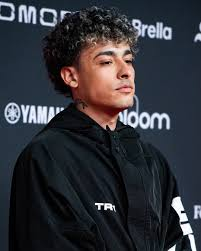

Mateo Palacios Corazzina nació el 25 de marzo de 2002 en La Boca, barrio perteneciente a la Ciudad Autónoma de Buenos Aires. Es hijo de Juliana Corazzina y Pedro Palacios, un rapero uruguayo conocido por su nombre artístico MC Peligro —exmiembro del grupo Diferentes Actitudes Juveniles y actual líder del colectivo artístico Sur Capital Clika—. Su abuelo paterno, Yamandú Palacios, también fue un destacado músico y guitarrista del género folklore, habiendo llegado a tocar junto a artistas como Alfredo Zitarrosa, Joaquín Sabina o Joan Manuel Serrat. Como manifestó en varias entrevistas la música de su padre fue su más grande influencia musical. Desde los tres años y gracias al apoyo que su padre le proporcionó, comenzó a realizar beatbox, a la vez que se interesó por el break dance. A pesar de estar fuertemente influenciado por la música hip hop, no se enamoró del género hasta sus cinco años, cuando vio la película 8 Mile —de 2003; dirigida por el cineasta estadounidense Curtis Hanson—, que llevó a que su padre lo llevase a una batalla de gallos, donde conoció el freestyle. Según comentó Trueno al medio Urban Roosters, comenzó a rapear cuando tenía siete años de edad y contó con el apoyo de sus profesores, quienes «entendían lo que hacía». A la par que practicaba con la música, decidió abrir a sus doce años, un canal de YouTube llamado Mateo Palacios donde subía principalmente videoblogs con temáticas humorísticas.
En 2015, con trece años, participó por primera vez en un torneo de freestyle a nivel nacional: "A Cara de Perro Zoo Juniors", celebrado en Tecnópolis. Trueno se mostró optimista antes del torneo, comentando que «iba a entrar, e iba a ganar», sin embargo, no mostró un buen desempeño durante la primera clasificatoria y terminó siendo eliminado. Según comentó su padre, «no dijo una sola palabra en todo el viaje de vuelta». Ese mismo año, intentó participar en la Red Bull Regional de Buenos Aires, pero también resultó eliminado en su primer enfrentamiento. En 2016, a sus catorce años, volvió a participar en A Cara de Perro Zoo Juniors, donde resultó vencedor. «Siempre me importó lo que digan de mí. Decían que estaba sobrevalorado porque era chiquito o porque mi viejo era rapero y yo pensaba ¿qué hice mal? Me costó, pero ahora entiendo que no puedo detenerme en eso». Tras su victoria, fue invitado a participar en una competición de freestyle organizada por la empresa de moda Vans, con motivo de celebración por los cincuenta años de la creación de dicha marca.
Debido a su consagración como campeón en la competición ACDP Zoo Juniors, Trueno compitió en la categoría principal de dicha competición: A Cara de Perro Zoo. Trueno mostró un buen desempeño en dicha competición, sin embargo, fue eliminado en la ronda final perdiendo contra el rapero Cacha. A finales de octubre, participó en la última fecha de El Quinto Escalón, donde resultó eliminado en los octavos de final por el rapero Legar. Para cerrar el año, decidió participar en el torneo Ego Fest 2016. En esa competición fue eliminado por Ecko en los octavos de final. El 28 de mayo de 2017 retornó a El Quinto Escalón, y participó en la segunda fecha de la temporada. En dicha presentación, Trueno fue eliminado en octavos de final ante el trapero oriundo de Almagro, Duki. Unas pocas semanas después, el 15 de junio lanzó, junto con un videoclip a cargo de Mauro Pérez Quinteros, su sencillo debut: «K.I.N.G», bajo el sello discográfico NEUEN.
El 23 de marzo, Trueno fue invitado a participar del torneo Pangea, una competición internacional de freestyle celebrada en el Pepsi Center WTC en la Ciudad de México. Originalmente para este evento, Palacios haría dupla con el rapero Dtoke, pero finalmente fue sustituido por el rapero porteño Replik. Allí, la pareja fue eliminada en los octavos de final por el dúo iberochileno Zasko y Ricto. Cuatro días después y en el teatro municipal de Lomas de Zamora, compitió contra el rapero Tuqu en las play-off dictadas para definir quien competiría en el torneo FMS Argentina. En el evento, Trueno resultó vencedor con 350 puntos obtenidos sobre 326 de su rival, con lo que se aseguró un lugar en la competición de ese año.
La relevancia que Trueno había conseguido, llevó a que el productor musical Bizarrap se fijara en él, y le invitase a grabar la sesión de freestyle «BZRP freestyle Sessions #6», que se convirtió en un gran éxito en YouTube, por lo que superó en poco menos de seis meses las 18 millones de visitas y que, un año después, superó las 120 millones de visualizaciones, lo que le dio el récord del video de freestyle más visto en dicho sitio web.
Trueno tuvo un buen rendimiento y, tras ganar la ronda final al rapero Wolf, se consagró como campeón de dicha competición. Belén Filgueira, de Infobae, admiró el trabajo realizado por Palacios en la competencia: «Es de La Boca, tiene 17 años y con su flow se consagró campeón de la competencia más grande de freestyle del habla hispana. Ahora, viajará a España para competir por el campeonato internacional, el título que todo MC desea alcanzar».
El 20 de febrero de 2020, efectuó el lanzamiento del sencillo «Atrevido», —cual fue el primer sencillo promocional de su álbum debut— liberado junto con un videoclip dirigido por Facu Ballve. Tras publicar la canción, Trueno comentó lo siguiente: «En mi barrio, La Boca, hay gente que se atreve al bien y que se atreve al mal. El mensaje es atreverse al bien, a romper el hielo y luchar por tus sueños». «Atrevido» tuvo una gran popularidad en su primer día de lanzamiento, y en ese tiempo logró superar el millón de visitas.
Al mismo tiempo que anunció su baja del torneo, anunció al público que estaba trabajando en su álbum debut titulado Atrevido y que este sería publicado a finales de marzo, sin embargo, decidió postergar la fecha de lanzamiento para el 25 de julio, debido a la pandemia de enfermedad por coronavirus: «Decidí postergar la fecha de lanzamiento del disco Atrevido porque no me da hacerme el gil cuando está todo re heavy». A finales de marzo, publicó el segundo sencillo promocional de su álbum: Producida por Taiu y Tatool, «Azul y Oro» (25 de marzo) es una canción que habla sobre su pasión por el equipo de fútbol Club Atlético Boca Juniors.
A pesar de la fecha pactada era para el 25 de julio, Trueno decidió adelantar dos días el lanzamiento de su álbum debut, Atrevido. Lanzado bajo la discográfica NEUEN, el proyecto contó con diez canciones y con las colaboraciones de Wos, Alemán, Nicki Nicole y Bizarrap. Tras el lanzamiento, comentó lo siguiente en una entrevista: «Yo lo que busco es la representación de persona a persona y los featurings que tengo me representan todos en una gran parte, cada uno de una manera diferente». Las canciones «Sangría» —con Wos— y «Mamichula» —con Nicki Nicole y Bizarrap—, pertenecientes al proyecto, se popularizaron rápidamente.
Para cerrar el año, publicó en diciembre dos videoclips de canciones pertenecientes a su álbum debut: «Background» y «Ñeri». Ambos fueron dirigidos por El Dorado y Lucas Vignale, y el video de «Ñeri» fue grabado en el Estadio Alberto J. Armando. Es lanzamiento de este último fue anticipado por Palacios a través de sus redes sociales con la frase: «No sé si la tribuna está lista para que empiece el partido, dicen que empieza por finales de diciembre, ¿está lista la tribuna?». Tras la publicación del video escribió, a través de una publicación en Instagram, el siguiente mensaje: «Cerramos este hermoso año como el barrio lo pide».
El 12 de mayo de 2022, publicó su segundo álbum de estudio, Bien o mal, centrado en las vivencias y expresiones de la cultura argentina, el cual se encontró dividido en tres discos, de seis temas, un tema y tres temas respectivamente. Una semana antes había lanzado «Manifiesto Freestyle», el cual se encasillo en el segundo disco.Uno de los sencillos más destacados del proyecto fue «Tierra Zanta» junto a Víctor Heredia, donde se centra en la vida de los pueblos latinoamericanos y enlaza a estos como hermanos y raíces de la historia sudamericana.También colaboro con Nathy Peluso en «Argentina», un sample de «Los ejes de mi carreta» de Atahualpa Yupanqui, dónde nombran a todas las provincias del país y hacen referencias de como se lo representa en el mundo.
El 16 de mayo de 2023 ganó el Gardel de Oro por su desempeño desde que comenzó su carrera y la recepción de Bien o Mal y junto a ello el Mejor álbum de música urbana. También ganó la Grabación del año junto a Nathy Peluso por «Argentina». El 12 de septiembre de ese mismo año, cerro en Madrid el tour de Bien o Mal presentándose en países como Estados Unidos, Argentina, España, México, entre otros.El 1 de marzo de 2024, hizo su primer concierto en el Festival Internacional de la Canción de Viña del Mar, logrando así ser el primer rapero en presentarse en el evento chileno.El show de más de 50 minutos le valió dos gaviotas de plata y oro. También dejó un mensaje en contra de las dictaduras cívico-militares que se produjeron en Chile y Argentina.Además, fue uno de los artistas más jóvenes en presentarse en toda la historia del Festival de Viña del Mar.
El 23 de mayo de 2024, publicó su tercer álbum de estudio titulado El último baile, que cuenta con trece sencillos y promocionales lanzados anteriormente a la fecha como «Tranky funky», «Ohh baby», y «The roof is on fire». Si bien comunicó que la temática principal del disco es en honor a los primeros 50 años del hip-hop, indirectamente está relacionado con las experiencias laborales y personales que vivió en el año 2023, como el cambio de equipo de trabajo o la ruptura de su relación.